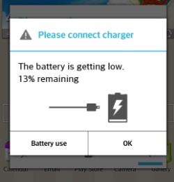

https://leap.se

Peer to peer?

Better federation!
- Protect providers from their users
- Protect users from the provider
What does
LEAP do?
-
LEAP Platform:
toolkit to make it easier to run a service provider -
New protocols:
so no need to trust your connection provider -
Bitmask client:
smooth working client with compatible providers

email service
soledad
mx
transitional key validation
generic rules for automatic key management,transition from TOFU to more advanced ruleset.
- bind key <-> email address
- key directory
- endorser (provider)
- binding info: evidence for "educated guess"
- verified key transition (automatic)
TOFU
With a bunch of exceptions2. Regular Refresh
All keys are regularly refreshed to check for modified expirations, or new subkeys, or new keys signed by old keys.
This refresh SHOULD happen via some anonymizing mechanism.
3. Key Replacement
A registered key MUST be replaced by a new key in one of the following situations, and ONLY these situations:
- Verified key transitions.
- If the user manually verifies the fingerprint of the new key.
- If the registered key is expired or revoked and the new key is of equal or higher validation level.
- If the registered key has never been successfully used and the new key has a higher validation level.
- If the registered key has no expiration date.
LEAP platform
sudo gem install leap_cli
leap new example --domain example.org
cd example
leap add-user --self
leap cert ca
leap cert dh
leap cert csr
leap node add blueberry services:openvpn \
ip_address:1.1.1.1 openvpn.gateway_address:1.1.1.2
leap node add raspberry services:couchdb,webapp \
ip_address:1.1.1.3
leap init node
leap deploy